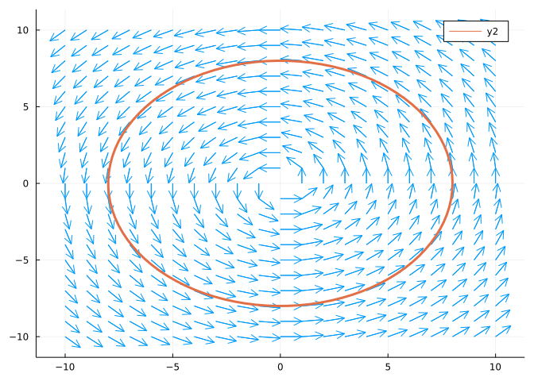

Geometric And Numeric Interpretation of Differential Equations
1 First-Order ODES
- ODE
-
Ordinary Differential Equations
- First-Order ODEs
-
ODEs in terms of the first derivative of y.
y' = f(x,y)
Examples:
\begin{gathered} y' = \frac{x}{y} \\ y' = x - y^2 \\ y' = y - x^2 \end{gathered}
The first is solvable by separating variables; the third is easily solvable; but the second is unsolvable: there are no elementary functions you could write down to give a solution to that differential equation.
Unsolvable equations are the rule rather than the exception. What do you do when you meet one?
2 What to do when you meet a nasty ODE
2.1 The Geometric View of Differential Equations
On the one hand, you have the analytic method of solving a differential equation:
- Analytic method
-
Start with a differential equation y' = f(x,y), then find solutions y_1, y_2…
The geometric view starts with a Direction field and results in an integral curve.
You fill the plane with points (x,y), each of which has an infinitesimal line element with the slope f(x,y). The integral curve is a curve starting from a particular plane, and which is tangent to every line element at every slope. The integral curve has the direction of the field everywhere at all points.
Theorem 1 (Integral Curve) y_1(x) is a solution to y'=f(x,y) if and only if the graph of y_1(x) is an integral curve of the direction field associated with y'=f(x,y).
For y_1(x) to be a solution to y'=f(x,y), then y_1'(x) must equal f(x, y_1(x)) for all x.
For the graph of y_1(x) to be an integral curve of the direction field associated with y'=f(x,y), the slope of y_1(x) must equal the slope of the direction field f(x, y_1(x)) for all x.
Clearly if one statement attains, then both must attain!

Here’s the same direction field with an integral curve on top:
